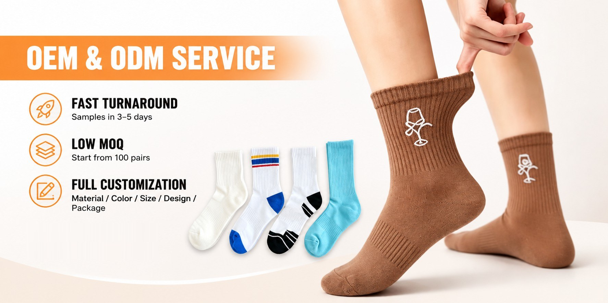
Product range
Every category below is made in-house on our own machines — no trading layer in between.
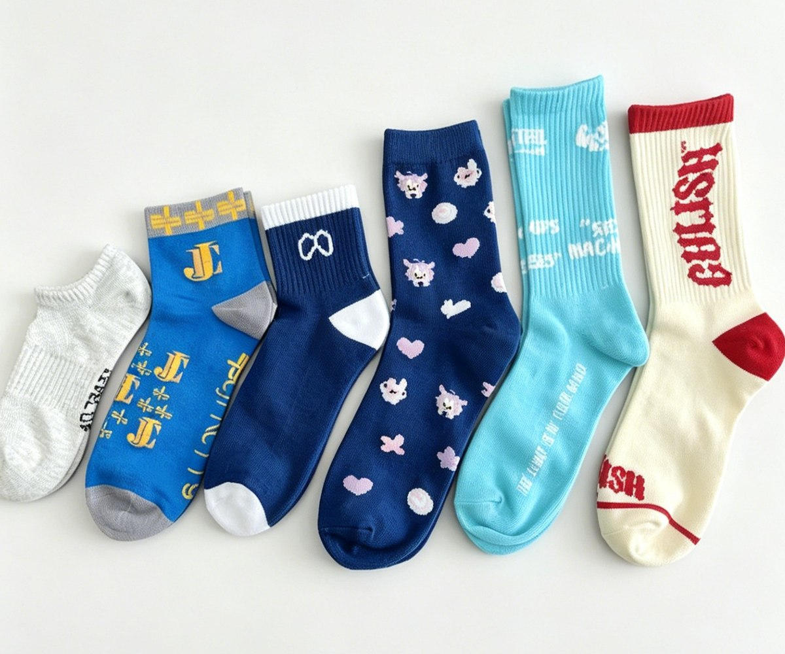
Colour is knitted into the fabric itself. Stripes, geometric repeats and knit-in lettering that hold up to industrial washing.
View jacquard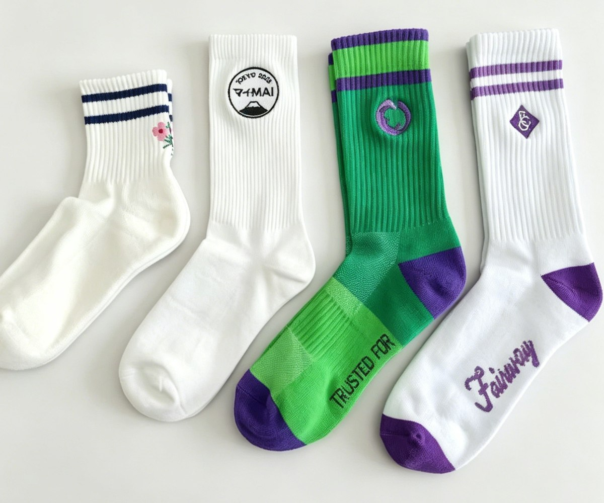
A raised thread logo on the cuff or leg. The finish that makes a sock read as retail, not giveaway.
View embroidery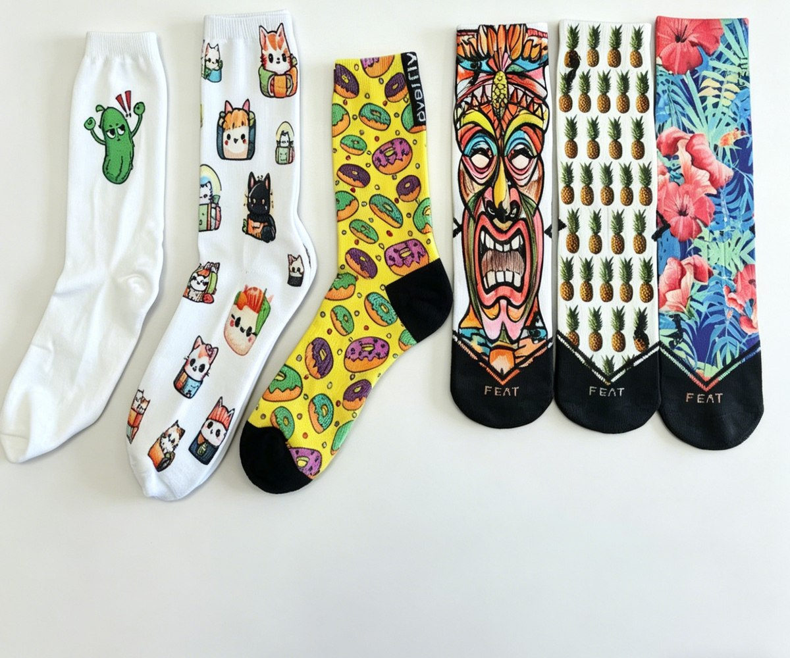
No colour limit. Gradients, photographic artwork and full-bleed print wrapped around the whole sock.
View printing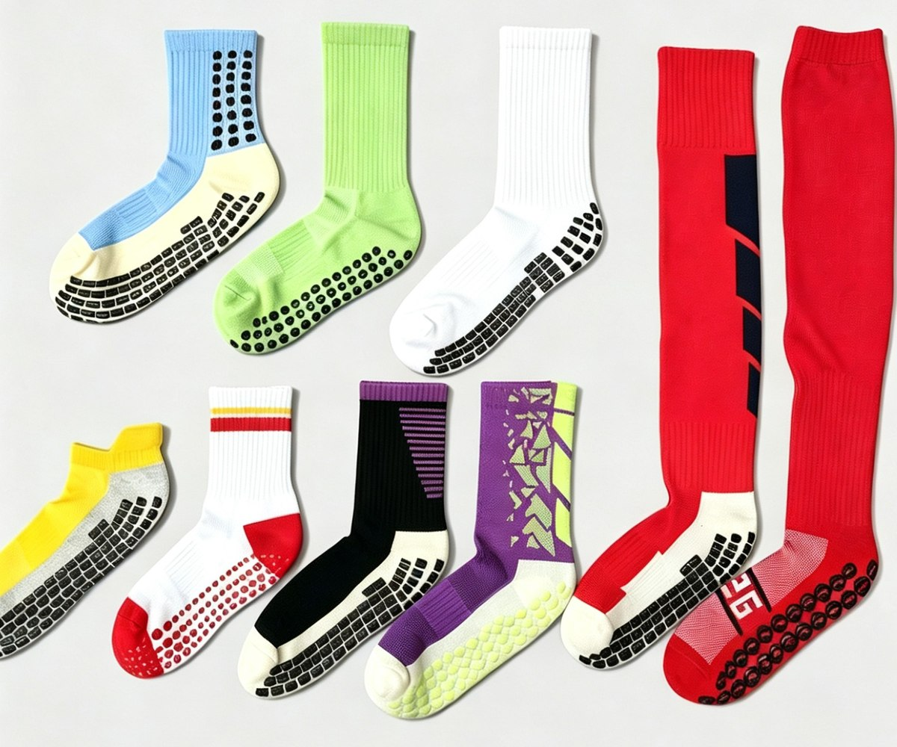
Silicone, PVC or flocked grip on the sole. Full sole, heel-to-toe strips or a repeating dot pattern.
View grip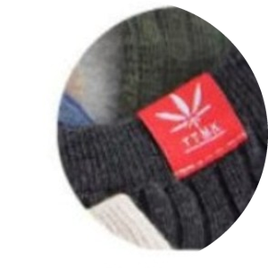
Cloth label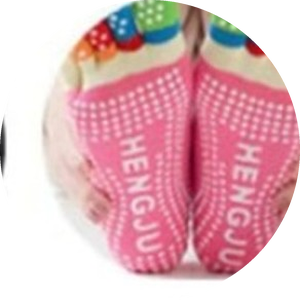
Anti-slip grip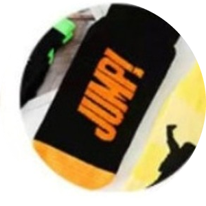
Jacquard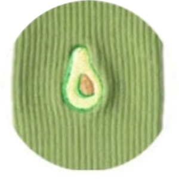
Embroidery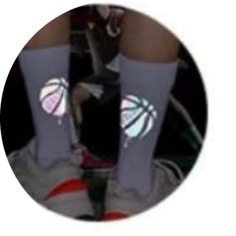
Reflective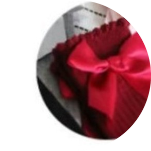
Bow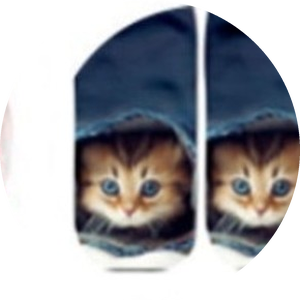
Sublimation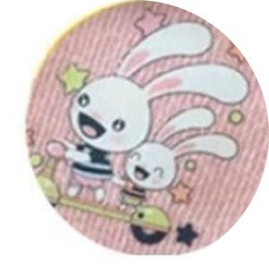
Heat print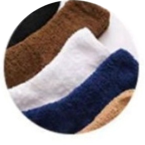
Fuzzy knit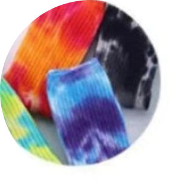
Tie dyeWhat we actually do
Jacquard and embroidery are knitted into the fabric, so the design cannot crack or peel. Sublimation, heat transfer and print carry full-colour artwork. Grip, labels, bows and terry are added after knitting.
See customization optionsHow an order runs
You keep talking to the same person from mock-up to shipment — no handover to a trading desk.
A sketch, a photo of a sock you like, a tech pack or just an idea. A digital mock-up comes back within 24 hours.
Our technician turns the artwork into a knitting programme, a colour breakdown and a yarn choice.
We knit one pair and send photos or a video for your approval before the line is set up for your order.
Knitting, linking, finishing and packing under one roof. 20 days for 1–500 pairs, rush available.
Express, air, rail or sea. Tracking number and shipping documents sent the day the order leaves.
The factory
Jiaxing Mingzhi Textile Co., Ltd. produces custom socks in every construction we list — jacquard, embroidery, sublimation print and silicone grip — and exports them to the United States, Japan, Europe and beyond.
We sit close to Shanghai and Ningbo ports, which is how we hold quality and price at the same time for buyers on the other side of the world. Your contact sends production photos at each stage, so you always know where the order stands, and stays with you after it ships.
Jiaxing Mingzhi Textile Co., Ltd. · Yuanhua Town, Haining, Jiaxing, Zhejiang, China
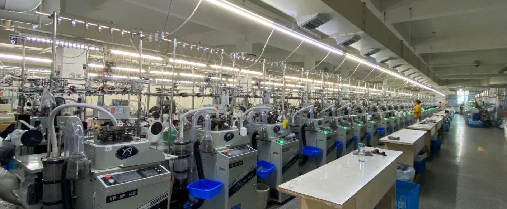
Knitting, linking, grip application and packing all happen in the same building in Yuanhua Town, Jiaxing — the sock-producing district south of Shanghai — so nothing waits on a subcontractor.
See the factoryWhat buyers say
Reviews left by buyers on our marketplace store. Several came back for a second colourway.
Great supplier, will order again.
The colours are so vibrant and the quality of my cotton socks are great. I am thrilled to bits with them.
These are great quality and are exactly what I expected. I ordered them and they shipped even faster than what I had expected.
Very easy to work with and great help.
Re order as quality is very good.
They are amazing quality. Seller works fast, communication is great, price is good.
Tell us the sock type, quantity band and market. Final artwork is not required to start — a sketch or reference photo is enough.